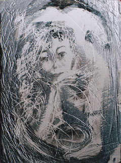

Le
plâtre (substrat, support)
|
Le
plâtre est traité dans plusieurs pages web sur Dotapea.
L'article
Plâtre du glossaire joue le rôle de portail.
Cliquer
ici. |
Le
plâtre a ses spécificités - avertissements
Il faut vraiment mettre en garde les artistes songeant à utiliser ce
produit pour réaliser des tableaux ou dessins, contre son poids important et son caractère cassant. L'accrochage est
malaisé, le transport délicat. L'enchantement qui peut naître lors du travail
avec ce merveilleux support peut être réduit en miette, c'est le mot juste,
lors d'une exposition ou d'une expédition. D'importantes précautions doivent
être prises (voir notamment renforcement in
carreaux de plâtre).
En fait, tout comme nous l'avons fait dans l'article Le
plâtre comme liant, nous conseillerons ici l'emploi du support plâtre
sur un autre support plus résistant, voire fixe.
La poudre soulevée lors de la taille ou du polissage du
plâtre n'est pas plus anodine que n'importe quelle poudre de pierre à base de
calcium (marbre, albâtre,
etc.).
Quelles peintures pour le plâtre, quelles enductions ?

Excellent support pour les peintures aqueuses (voir photo : peinture
vinylique sur carreau de plâtre), le plâtre ne nécessite pour
celles-ci une enduction qu'à cause de son caractère très poreux et
pulvérulent - noter que cet aspect peut aussi être mis à profit et l'a souvent
été. Le plâtre étant un liant, il peut aussi (comme la
chaux) être employé pour peindre sur... lui-même !
Les patines et peintures décoratives sur plâtre
(notamment à base de gomme arabique et de gomme
laque) ont été largement employées et
continuent à l'être sans enduction préalable. La gomme laque peut d'ailleurs
parfaitement servir d'enduit pour le plâtre nu, c'est une pratique assez
courante en peinture décorative.
De même, une ou deux couches d'enduit vinylique ou acrylique
(10 à 30%, en volume, en dilution dans l'eau) autorise une intervention
picturale avec n'importe quelle peinture, dont la peinture à l'huile. L'enduit
n'est d'ailleurs complètement nécessaire qu'avec cette dernière : le plâtre
boirait l'huile qui laisserait des "taches de gras".
Concernant les surfaces poreuses propres
que l'on peut assimiler au plâtre (murs, pierre calcaire), nous conseillons ce
type d'enduits, éventuellement enrichis de... plâtre lorsque l'on souhaite un
matériau "plastique", pouvant être empâté et travaillé de
différentes manières.
Il suffit de garder à l'esprit quelques "dangers" :
- le contact
direct du plâtre pur avec des substances acides a pour conséquence la formation
de sels car
c'est un produit alcalin. Ce phénomène peut être
mis à profit moyennant de rigoureux tests préalables.
- toujours à cause de son pH alcalin, le
plâtre est susceptible de réagir en présence de certains esters (voir saponification).
Une peinture à l'huile appliquée directement sur le plâtre sans enduction
préalable peu occasionner en premier lieu de splendides "taches de
gras", puis elle brunit. Mais après une enduction correcte, son
application sur le plâtre ne pose aucun problème.
- il est pulvérulent. L'action mécanique n'a pas seulement
l'inconvénient de salir son auteur : elle abîme la surface. Il est donc
prudent de prévoir, selon le cas, une enduction, un vernis ou un fixatif.
Concernant les enduits non synthétiques - sauf corps gras -, il n'existe guère d'indication ou de
contre-indication spécifique. Pour les grandes surfaces, on notera un procédé
peu coûteux (mais non testé par nous) à base d'amidon
évoqué dans l'article sur la préparation des bois (cliquer
ici). Plus couramment dans le domaine des enduits "à
l'ancienne", on utilise la colle de peau,
parfois la caséine.
Il est possible de donner au plâtre un petit quelque chose de l'aspect du
marbre par adjonction de lait au moment du gâchage.
Un beau poli pourrait être obtenu par ce moyen.
Il faut mentionner l'inutilité par nature de l'application d'un gesso,
avantage supplémentaire du plâtre.
Celui-ci peut absolument être utilisé comme liant à
fresque, comme la chaux sur un support en plâtre
bien propre, sans enduction préalable. lire
l'article dédié à cet emploi.